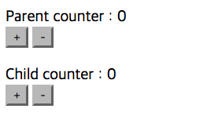

props 와 이벤트를 사용하예 아래 예제를 작성한다.
컴포넌트 구성
Parent 컴포넌트 ==> 인스턴스
Child 컴포넌트 ==> 전역 컴포넌트
이 앱의 특징은 다음과 같습니다.
Parent 컴포넌트에서 + 버튼을 클릭하면 카운터가 올라가고
Parent 컴포넌트에서 - 버튼을 클릭하면 카운터가 감소됩니다.
Parent 컴포넌트 에서 Child 컴포넌트 로 데이터를 전달할 때 props 속성을 사용하여 데이터를 전달합니다.
따라서, 상위 컴포넌트(Parent)와 하위 컴포넌트(Child)는 같은 값을 갖습니다.
Child 컴포넌트에서 버튼을 누르면 Parent 컴포넌트로 이벤트를 발생 시킵니다.
Child 컴포넌트에서 + 버튼을 클릭하면 부모의 callbackAddCounter 메서드 호출 발생
Child 컴포넌트에서 - 버튼을 클릭하면 부모의 callbackSubCounter 메서드 호출 발생
child-componet 템플릿 태그는 아래와 같이 설정하시오.
<div class="component-child">
Child counter : {props.counter} <br />
<button name="child" onClick={handlerAddCounter}>+</button>
<button name="child" onClick={handlerSubCounter}>-</button>
</div>
작업 순서
1. Parent 컴포넌트 부분만 작동되게 만든다.
2. 1번이 되면 Parent 컴포넌트가 정상 작동되면
숫자가 표시되게 Child 컴포넌트를 작성한다.
3. 2번이 되면 Child 컴포넌트에 props를 통해 값을 내려받게 작성 한다.
<ComponentChild counter={counter} />
부모의 counter를 자식에서 num 으로 받는다.
4. 사용자 이벤트를 사용하여 Child 컴포넌트에서
Parent 컴포넌트로 값을 전달되게 한다.
<div id="app" class="component-parent">
Parent counter : {counter} <br />
<button name="parent" onClick={handlerAddCounter}>+</button>
<button name="parent" onClick={handlerSubCounter}>-</button>
<p></p>
<!--
Child 컴포넌트를 등록하고
counter 데이터 속성과 콜백 메서드가 props로 전달되도록 설정한다.
-->
<Child> </Child>
</div>